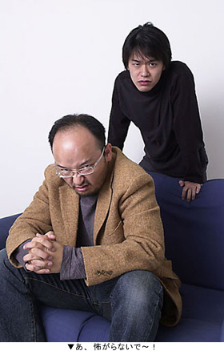

|
登場人物紹介 |
 |
小川：
本HPのコラムでもおなじみのPSOエピソード３ディレクター。
その豪快な見た目とは裏腹に意外とチェックは細かく、色んなことに口を出すのが好き。
最近、愛娘と健康のために禁酒中の日々。 |
 |
藤原：
PSOエピソード３メインプランナー。
そのさわやかな見た目とは裏腹に、中身は意外と腹黒く、またあらゆる言動がなぜかウソくさい。
今回のお話の原稿執筆者でもある。 |
 |
深見参段：
ファミ通オンラインやクロスレビューなど多彩な活躍を見せるファミ通女性編集者。
本人はおすましキャラで通したいらしいが、本当はかなりのパワーの持ち主。
自他共に認めるオンラインゲーマーでもある。 |
|
いよいよ結果が…。
12月18日（木）深夜
藤原：
小川さん！
小川：
オゥよ！
藤原：
今週のファミ通（12/19発売号）、見ましたか？
小川：
ケケケケ。
ヤツら、わざわざ原稿、送ってきやがったからな。
藤原：
ククッ…ファミ通、すっかりこちらの挑発にノってきましたねぇ。
小川：
あまりにあっさりとしたビジネスライクな記事だったので、コッチのハイテンション過ぎが、チト恥ずかしいがな。
藤原：
突然で一方的でしたからね。あんなもんでしょう。
小川：
アァ。
流れるように読者に勝敗予想（※1）を求めていたのには、チト驚いたが、んなのオレタチの勝利に決まっているし、問題ネェだろ。
ンガ！シカーシ！それとは別にもう一つ、あの記事には大きな問題がある…！
藤原：
あ、あの写真ですね…。（がくり）
小川：
そうだー！お、おのれ深見参段めぇ〜！
こっちの写真（※2）を使うって仁義を通しておいたにも係わらず…！
藤原：
あの写真が載ったことで、オレタチは、いろんなものを失いましたよ…。
小川：
クッ、クソォ〜！なんであんな写真、撮らせちまったんだ…！
藤原：
撮影でちょっとおだてられて（※3）調子こいてた自分に腹が立ちますよ！
小川：
くぅ〜、ピエロだよ！
俺たちゃ完全にピエロだよ！
藤原：
それにしても、我々の写真もギリギリですがファミ通編者２人の写真もかなりギリギリですね…。
小川：
…ムゥ。た、確かに…。写真の痛さでは完全にドローだな…。
しかし深見参段めぇ…まさか相方にあのプロムナード永山（※4）を持ってくるとは。
藤原：
一気に向こうのチームがイロモノくさくなりましたね。
小川：
そのおかげで、要求できる罰ゲームの幅が一気に広がったことも確かだ。
藤原：
そう言えば、対決することになった以上、負けた方がやる罰ゲームを決めないといけませんね。
小川：
そだな。
藤原：
どうせやるなら読者の方が楽しめるやつがいいですね。
小川：
あまり長いのもイヤだな。
藤原：
うーん…。
「ラ◎ワゴンに乗る」とか？
小川：
そ、それは…、微妙な罰ゲームだな…。
藤原：
じゃあ…丸坊主だと深見参段が厳しいから…「自腹で全身永久脱毛」。
小川：
たぶん、金額が半端じゃない（※5）ぞ…。
藤原：
そうか。
小川：
うーん…流行にのって「トリ◎アに採用されるまでハガキを出しつづける」ってのは？
藤原：
採用される頃には皆、忘れてますよ！
じゃあ現実的に「負けた方が勝ったほうの宣伝を１日かけてやる」とか？
小川：
宣伝か…、宣伝といったらやっぱり…
小川・藤原：(声をそろえて)
ズームイン…
藤原：
やっぱりそうなりますか。
小川：
あまりに、王道すぎて微妙だな。
藤原：
微妙ですね。
「LIVEカメラを自宅につけて部屋を24時間HP上に公開する」ってのは？
小川：
全員、ほとんど家に帰ってないからなぁ。
ま、それ以上に、ヤローの24時間を見ても楽しくないだろう。
藤原：
確かに。
ある意味、見る人の方が罰ゲームですね。
小川：
うーん。
自分達もやる可能性がある罰ゲームを自分達で考えるってのは難しいもんだな。
藤原：
やっぱり…聞いてみますか？
小川：
そうだなぁ。
素直にやらせたいことを聞くのが一番だな。
よし！聞くぞ！これを読んでる者たちに！ |
|
ということで…
|
緊急募集！！
(12/25、受付終了しました。たくさんのご応募ありがとうございました！)
ファミ通vsソニックチーム！負けた２人にやらせる罰ゲーム募集！ |
２人の会話にあった通り、
・ものすごく時間がかかるもの
・お金が果てしなくかかるもの
・のたうちまわるほどの激痛が走るもの
・読者の方がひいちゃうもの
・ついでに我々もひいちゃうもの
はNGの可能性が高く、
・読者の皆様がなんらか参加できて楽しめるもの
・「罰に耐える＝ギネスに載る」ような凄いもの
は採用されやすいようです。
負け犬にはこんな罰がふさわしい…など、ステキなアイディアがありましたら
下記ボタンをクリック！タイトルはそのままでメールを送ってくださ〜い！ |
|

(12/25、受付終了しました。たくさんのご応募ありがとうございました！) |
採用された罰ゲームを書いた方１名（複数いた場合は抽選）にPSOグッズをプレゼントさせていただきます。
＊ご注意＊
・12月24日（水）クリスマスイブまでの受け付けとさせていただきます。
・プレゼントの発送を持って発表にかえさせていただきます。
・本メールアドレスは、今回のプレゼントキャンペーン及びソニックチームへのファンメールアドレスとなっております。お客様より頂きましたメールに対しての回答・返信は原則行なっておりません。予めご了承願います。 |
小川：
ヲイヲイ、PSOグッズって何だよ！？期待させて、へっぽこなモンじゃないだろうな。
藤原：
クククッ。そんなわけ無いじゃないッスカ！
小川：
だよなぁ。
藤原：
ククククク。
皆様のご意見、お待ちしております！
週刊ファミ通の公式サイトはコチラ。
⇒【総合ゲーム情報サイト
『ファミ通.com』】 |
第１回『“32点 = ゴールド殿堂”の巻』を振り返る
第３回『“深見参段登場！”の巻』を振り返る
第４回『“朝まで生組み手！”の巻』を振り返る
第５回『“いよいよ大会！”の巻』を振り返る
番外編『“ちょっと知りたいのです！”の巻』を振り返る
|